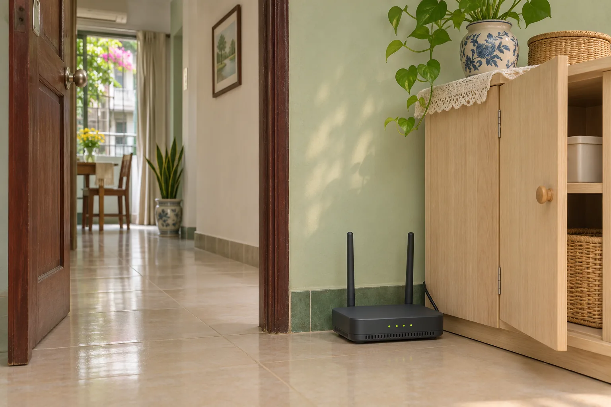

Tìm góc Wi-Fi yếu bằng bản đồ căn nhà
Một kết quả đo cạnh bộ phát có thể che mất vấn đề ở phòng trên lầu. Hãy vẽ một bản đồ đơn giản trước khi đổi gói mạng.

Vẽ đường đi thường dùng
Đánh dấu nơi đặt bộ phát và các điểm bạn họp, xem phim hoặc học. Đo khi đứng yên ở từng điểm, dùng cùng một thiết bị và lặp lại vào giờ nhà đông người. Ghi cả biểu hiện như cuộc gọi đứng hình hay âm thanh đứt quãng.
Tách vùng phủ khỏi đường truyền
Nếu tất cả các vị trí đều chậm trong cùng khung giờ, thử thiết bị thứ hai gần bộ phát. Nếu chỉ một phòng gặp vấn đề, vị trí và vật cản đáng xem trước. Đổi chỗ bộ phát ở nơi thoáng, tránh nhét vào tủ kín rồi đo lại tại đúng ba điểm trước đó.
Chọn giải pháp theo nhu cầu
Một phòng làm việc cố định có thể dùng dây mạng nếu đi dây hợp lý. Nhiều phòng thay đổi vị trí thường xuyên cần giải pháp phủ rộng hơn. Giữ bảng trước và sau để biết cải thiện đến từ nơi đặt hay thiết bị mới, đồng thời kiểm tra lại lúc nhiều người cùng dùng.